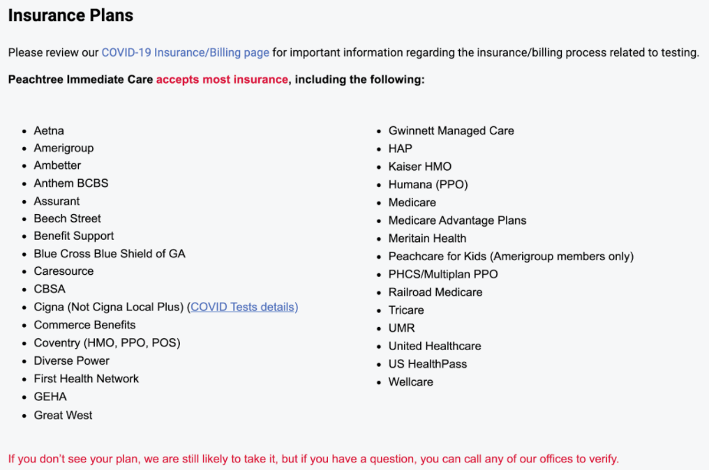

Urgent Care Centers & Hospitals Near GT
Peachtree Intermediate Care - Midtown
- Make an appointment online
- Address:
450 14th Street NW Atlanta, GA 30318
- Phone:
(404) 480-9797
- Email:
Midtown@peachtreemed.com
- Fax:
(404) 410-7707
- Hours
Open 8:00 AM - 8:00 PM everyday 361 days a year
Closed for New Year's Day, Easter, Thanksgiving & Christmas
- Offered Services:
Urgent Care
Family Care
Occupational Medicine
- Accepted Insurance:

Urgent Care 24/7 Centennial Park
- Make an appointment online
- Address:
285 Centennial Olympic Park Dr NW CU-2A Atlanta, Georgia 30313
- Phone:
(404) 721-0444
- Fax:
(404) 410-7707
- Hours
Open 24/7, 365 days a year
Walk-ins allowed (appointment not required)
- Offered Services:
Urgent care & Walk-ins
Cold, flu, Coronavirus, and illness care
Wound care
X-Rays
Ultrasound
Full Service Lab Testing
Drug and Alcohol Testing
Physical Exams
Drug Screens
STD testing
Flu shots
Hydration Therapy
- Accepted Insurance:
Do not accept insurance as a form of payment
Students get visit discount ($99 office visit)
- Rapid Covid-19 testing available by appointment
Emory University Hospital Midtown
- Emorys Website
- Address:
550 Peachtree St NE Atlanta, GA 30308
- Phone:
Main Line: 404-686-4411
Appointments: 404-778-7777
- Accepted Insurance:
Emory accepts most major insurance plans, including private and employer-based plans, Federal health insurance
marketplace plans as well as traditional Medicare and Medicare Advantage plans